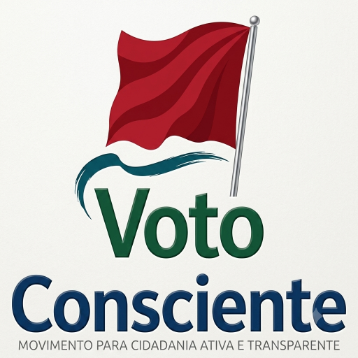

Informação é poder. Vote com consciência!
É quando o eleitor escolhe seus representantes baseado em informações verificáveis, propostas claras e histórico comprovado — não em promessas vazias ou apelo emocional.
No Brasil: das 8h às 17h (horário de Brasília).
No exterior: das 8h às 17h (horário local de cada cidade).
1. O que acontece se eu votar em branco?
R: O voto não é contabilizado como válido e é descartado na apuração final.
2. Posso usar o celular na cabine?
R: Não! É proibido o uso de qualquer aparelho eletrônico na cabine de votação.
3. E se eu não votar?
R: Você pode ser multado e ter problemas para tirar passaporte, fazer concurso público, etc.
Apresente seu documento com foto para o mesário.
Aguarde sua vez e entre sozinho. Não leve celular!
Verifique se a foto e o nome estão corretos. Toque em CONFIRMA (verde).
Aperte BRANCO e depois CONFIRMA.
Aperte CORRIGE (laranja) e digite novamente.
Ouvirá um bip e aparecerá "FIM" na tela.
Eleitores no Brasil (2026): ~156 milhões
Seções eleitorais: ~100 mil
Urna eletrônica: usada desde 1996
Tempo médio de voto: 1 minuto e 20 segundos
Idade mínima para votar: 16 anos (voto facultativo até 17; obrigatório a partir de 18)
Voto facultativo: analfabetos e maiores de 70 anos
Digite o nome do candidato para verificar informações em fontes oficiais e na internet:
🚩 Ficha suja: Candidatos com condenação em segunda instância estão impedidos pela Lei da Ficha Limpa.
💰 Financiamento: Verifique doações de campanha no site do TSE (Prestação de Contas).
📜 Mandatos anteriores: Busque o histórico de projetos aprovados e frequência em sessões.
🏛️ Processos: Consulte o nome no site dos tribunais de Justiça do estado.
📰 Imprensa: Busque notícias de fontes confiáveis sobre o candidato.
🤝 Lobbies: Verifique se o candidato recebeu doações de setores específicos (agronegócio, bancos, etc.).
🗳️ Eleitores em 2026: ~156 milhões de brasileiros aptos a votar.
🖥️ Urna eletrônica: Usada desde 1996, sem registro de fraude comprovada.
⏱️ Tempo médio de voto: 1 minuto e 20 segundos por eleitor.
📍 Seções eleitorais: ~100 mil espalhadas pelo país.
👶 Idade mínima: 16 anos (facultativo até 17; obrigatório a partir de 18).
🎓 Voto facultativo: Analfabetos e maiores de 70 anos.
💰 Cláusula de barreira 2026: Partidos precisam eleger 13 deputados federais distribuídos em 1/3 dos estados OU obter 2,5% dos votos válidos na Câmara.
Site oficial com dados de candidatos, resultados, estatísticas e normas eleitorais.
Consulte candidatos, prestação de contas, bens declarados e situação eleitoral.
Verifique se candidatos têm condenações que os impedem de concorrer.
Acompanhe votações, projetos de lei e atuação dos deputados federais.
Consulte projetos, votações e atuação dos senadores.
Lista oficial dos 30 partidos com registro definitivo no TSE.
Portal com serviços para eleitores, candidatos e partidos.
Site da Presidência da República com informações do governo federal.
ONG que fiscaliza o poder público e combate a corrupção.
Educação política de forma simples e acessível para todos.